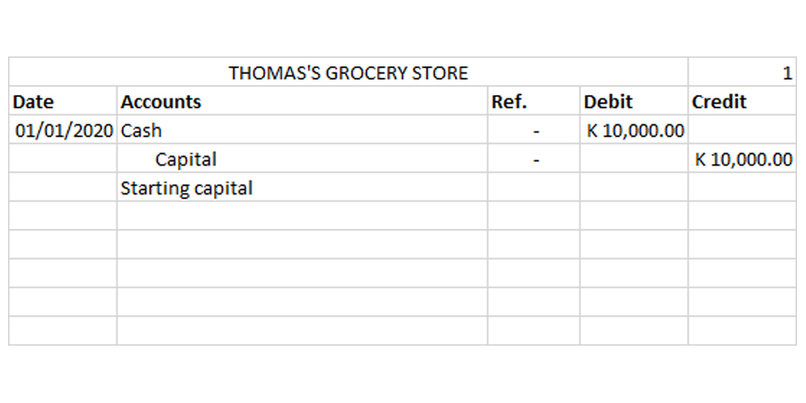

3.3 Example

The image above shows how Thomas's first transaction would be recorded in a general journal:
On 1 January 2020, Thomas decides to start his business and puts in K 10,000 of his own money into the business as capital.